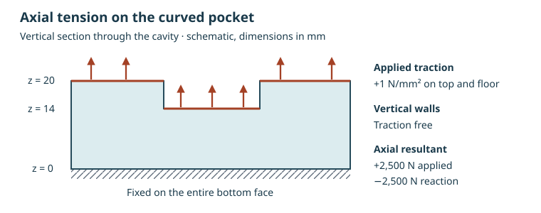
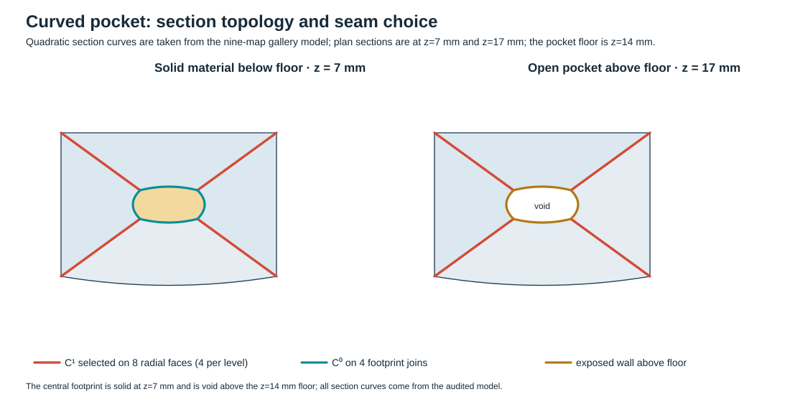

Automatic displacement continuity
For a homogeneous bonded elastic solid, give the native solver a geometry model, a material, a support and loads. The field compiler chooses the supported joins before stiffness assembly. It never solves a trial load case to choose a join. This decision sets the approximation space. Solver residual tolerance controls algebraic equilibrium in that space; it does not specify displacement accuracy.
Run one load case
From a checkout, run:
mkdir -p build
cargo build --release --locked --offline
target/release/solidcraft-trivariate solve-job \
docs/site/data/plate_blind_pocket/plate_blind_pocket.model.json \
tests/references/automatic_pocket_tension.job.json build/tension.json
The input job
names the support and loaded design faces. The audited geometry supplies the
maps, incidences and surface names. No degree, constraint list or comparison
solve appears in the job.

At zero Poisson ratio, unit axial stress solves this loading exactly. The floor contributes 512/3 N to the resultant. Omitting it changes the physical problem.
Read the results
The job specifies Young’s modulus 10 MPa and Poisson ratio zero. The exact
displacement is \(u_z=z/10\) mm. The projected loaded area is 2,500 mm².
With a volume of 48,976 mm³ and strain-energy density of 0.05 N/mm², check
energy_n_mm against 2,448.8 and reaction_n against (0, 0, −2500).
This regression exercises the real clamp, both tractions and the selected
space in a single solve. The analytic comparison belongs to qualification.
Selection before assembly
Interface presented to the field compiler |
Automatic action |
Evidence used |
|---|---|---|
Internal split of the recovered NURBS strip |
Restore the continuity available in the source basis. |
Source coefficients, knot multiplicity, true parameter intervals and oriented trace. |
Qualifying axial split of translated sections |
Couple the first axial derivative. |
Identical section mapping and physical interval lengths. |
Qualified radial seam in the published curved pocket |
Use a cubic section field and couple its physical gradient. |
Exact model controls and face incidence, matched to the qualified seam layout. |
Other conforming lateral joins, including the curved footprint |
Retain the shared displacement trace (C⁰). |
Physical gradient matching has no qualified selection rule there. |
Contact, slip, cracking or multiple material laws |
Outside this homogeneous bonded job contract. |
The input needs a solver implementing the intended interface law. |

The four radial lines appear in both layers (eight shared block faces). The footprint is an internal join below the floor and a free wall above it. A boundary face carries a load or a boundary condition; it has no neighbouring displacement field to smooth.
Geometry edits that change the pocket controls or incidence invalidate its specialized rule. An admitted matching interface then receives the conservative rule for its class. A failed geometry audit or an unsupported volume family stops the analysis. Saved field packages continue to use their recorded plan. Legacy fixed-Q2 mechanical jobs retain their original field formulation.
Inspecting a decision
In the raw-model result, continuity_selection records the policy,
the axial and section degree choices, and the qualified radial face count.
interface_decisions identifies each pair of block sides, its field order
and the evidence used. field_compilation_ms times the raw field compiler,
including construction of the constrained basis. It excludes mechanical assembly
and solution. To inspect a plan separately, use export-inherited-space
with {"schema":"inherited_field_auto_plan_v1","axial_degree":2}.
The normal load command above does not need this export.
On the published pocket the three-dimensional field has degree three in the section and two axially. Four axial interfaces inherit C¹, eight lateral faces use the radial C¹ rule and four footprint faces retain C⁰. The loaded example has 276 free vector coefficients. The measured relative solver residual was \(7.13\times10^{-12}\).
Cost and accuracy. In a separate development comparison, the same field with all twelve lateral faces at C⁰ had 456 free vector coefficients. On the smooth quintic manufactured load, its relative energy-norm error was 0.524%; the automatic selection gave 0.821% with 276 coefficients. These measurements use one section span per chart, the same axial field and order-ten quadrature. They concern a full three-dimensional field. The multi-level section study in Selecting displacement continuity uses a restricted linear height profile. The production decision uses neither the applied traction nor these two solves.
Why the rules depend on the interface
On a matching physical face the bonded displacement has a common value (C⁰). C¹ additionally requires equality of physical gradients. Within a recovered regular tensor parent a knot of multiplicity \(m\) in a degree-\(p\) basis guarantees \(C^{p-m}\) continuity. Across separately constructed maps a common boundary curve alone is insufficient to determine the normal derivative. The compiler must also account for the transverse maps and their orientation. See Recovering parents and choosing interface continuity.
On the studied pocket, a cubic field retained four section coefficients for its transverse gradient on a radial seam at two intervals, and ten at eight. On the curved footprint it retained only two at both resolutions. The geometry and topology tests performed during analysis identify where an already qualified rule applies. The rational trace-rank study and the 32 elasticity solves were run during development and are recorded in Selecting displacement continuity.
Collin, Sangalli and Takacs describe how a C¹ condition on neighbouring parameterizations can restrict field traces. Hasanova, Takacs and Takacs give approximation estimates under explicit planar analysis-suitable G¹ assumptions. These results explain why the field rule depends on its domain of qualification. They do not establish a universal convergence order for a pocket that changes section with height. Collin et al.; Hasanova et al..